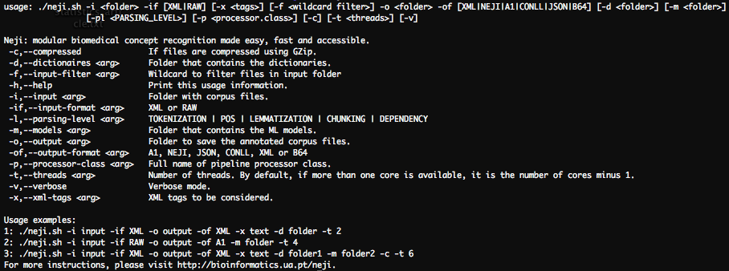
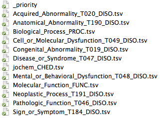
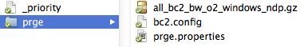

Tool and framework
The fastest way to start. Contains the framework, tool and GDep.
Download Neji
You can also download the source code and build the project using Apache Maven.
Download Neji source code
Go to GitHub Project
Maven dependency
If you use Apache Maven, you can easily add the Neji repository and artifact dependencies:
Repository:
<repository>
<id>bioinformatics-all</id>
<name>Public Bioinformatics Repository</name>
<url>http://bioinformatics.ua.pt/maven/content/groups/public</url>
</repository>
Artifact:
<dependency>
<groupId>pt.ua.tm</groupId>
<artifactId>neji</artifactId>
<version>1.0</version>
</dependency>
GDep
You can download our custom version of GDep, which is more flexible and consequently more fast for specific tasks.
Download custom GDep
Requirements
- Operating System (OS)
- Java 7 or later
Installation
- Extract the downloaded zip file
- Open a terminal
- Go to Neji root folder
- Give the right execution permissions to the Neji executable:
chmod u+x neji.sh
This entry explains how to use the provided tool. For detailed framework documentation, please visit the
tutorial.
Usage
Using the tool provided with Neji is quite simple:
- Open a terminal
- Go to the root folder of Neji
- Type:
./neji.sh
- Usage and self-explanatory information is provided:

Neji is distributed with an example, which is provided in the "example" folder. The following resources are provided:
- Corpus: a set of 10 abstracts from MEDLINE;
- Dictionaries: two small dictionaries: one for disorders and another for anatomy;
- Machine Learning (ML) model: one machine learning model for gene and protein names, including preferred and synonym dictionaries for normalization.
To annotate the corpus using both dictionaries and ML models, execute the following command:
./neji.sh -i example/corpus/in/ -if RAW
-o example/corpus/out/ -of NEJI
-d example/dictionaries/
-m example/models/
-t 4
If you prefer to not use the ML model, remove the associated option:
./neji.sh -i example/corpus/in/ -if RAW
-o example/corpus/out/ -of NEJI
-d example/dictionaries/
-t 4
If you want to use only the concepts provided by the ML, remove the dictionary option:
./neji.sh -i example/corpus/in/ -if RAW
-o example/corpus/out/ -of NEJI
-m example/models/
-t 4
You can explore the provided example to understand how dictionaries and machine learning models should be provided.
Dictionaries
Dictionaries must be provided following the TSV format, where each line is composed by two values:
- 1st: Identifier that contains 4 fields concatenated with a ":"
<source>:<id>:<type>:<group>;
- 2nd: Names concatenated with a "|".
UMLS:C0001327:T047:DISO acute laryngitis|acute laryngitis nos
UMLS:C0001339:T047:DISO acute pancreatitis|pancreatitis, acute
UMLS:C0001344:T047:DISO pharyngitis nos acute|acute pharyngitis|pharyngitis acute
UMLS:C0001360:T047:DISO acute thyroiditis|thyroiditis acute
To specify the dictionaries priority, which may be used for disambiguation procedures, a file must be provided, with one dictionary file name per line:
jochem_CHED.tsv
Congenital_Abnormality_T019_DISO.tsv
Acquired_Abnormality_T020_DISO.tsv
Anatomical_Abnormality_T190_DISO.tsv
Sign_or_Symptom_T184_DISO.tsv
Cell_or_Molecular_Dysfunction_T049_DISO.tsv
Neoplastic_Process_T191_DISO.tsv
Mental_or_Behavioral_Dysfunction_T048_DISO.tsv
Disease_or_Syndrome_T047_DISO.tsv
Pathologic_Function_T046_DISO.tsv
Molecular_Function_FUNC.tsv
Biological_Process_PROC.tsv
Such priority file should have the name "_priority" and be located in the same folder of the dictionaries:

Models
Each model is described using a properties file, defining the following characteristics:
- File: compressed file that contains the model;
- Config: file that contains features configuration of the model. Please visit Gimli documentation to know more details;
- Parsing: text parsing direction used to train the model;
- Group: semantic group of the annotations generated by the model;
- Normalization dictionaries: if normalization is required, provide the folder with the dictionaries, following the same approach previously described for dictionaries. If no normalization is required, this field should not be provided.
A model properties file should look like this (provided paths to files and folders are relative):
file=all_bc2_bw_o2_windows_ndp.gz
config=bc2.config
parsing=BW
group=PRGE
dictionaries=../../lexicons/prge/
Just like dictionaries, models are also provided using a priority file, where each line is a properties file for each model:
prge/prge.properties
Models and its configuration files can be organized as follows:

You can integrate the tool on your processing workflows, or you can start developing your own processing pipelines using Neji.
Please visit the tutorial for detailed documentation on modules and pipelines development.
Go to Tutorial